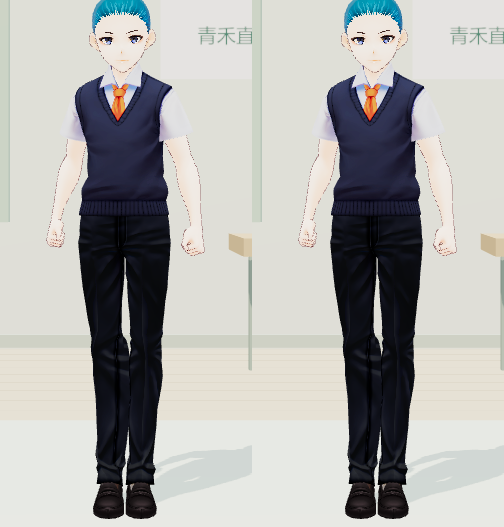
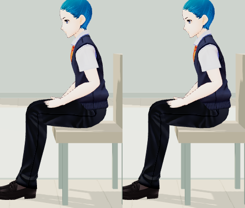

分件制服 · 游戏回放对照
同一房间、镜头、路线和制服。两个角色依次行走、入座、起身、离开。可单独全屏观看。
身体和上衣、裤、鞋四个文件实测冷载合计从 21,653,528 降至 18,097,200 字节。穿衣站姿和坐姿的正、侧面人物取样区逐像素相同。
查看固定姿势的近景对照
站立正面，左原版、右精简版
坐稳侧面，左原版、右精简版
固定构建 9d520a80d731。此处覆盖一套男制服和一把椅子。开发机浏览器完成验证，身体与上衣的静态纹理估算仍超过项目预算。测量明细